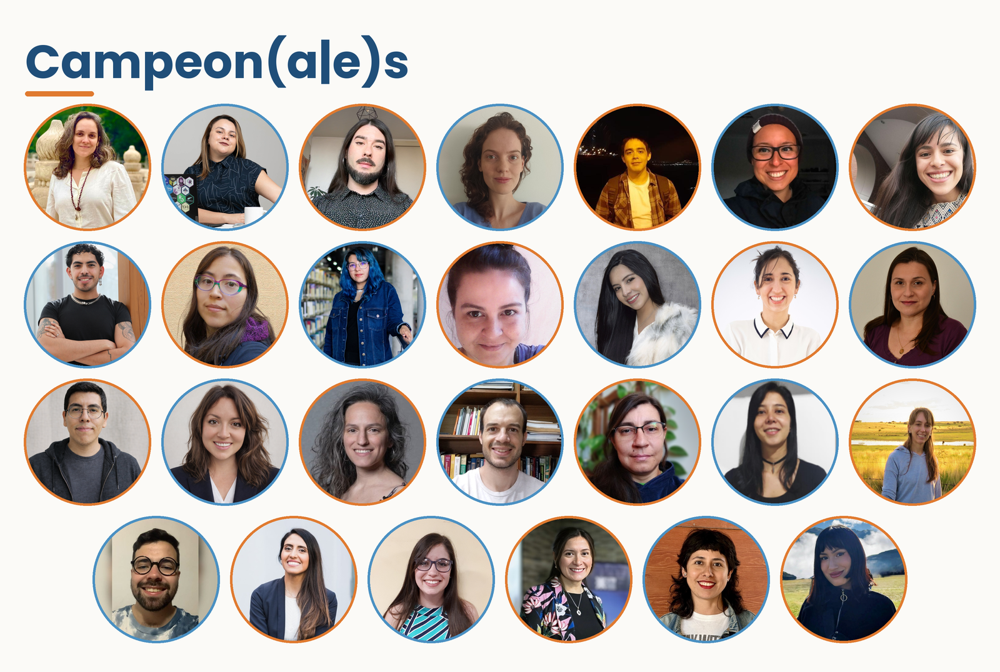
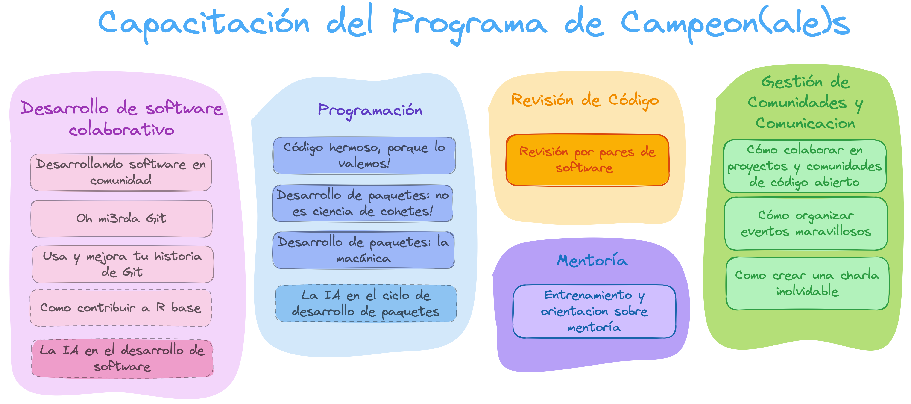
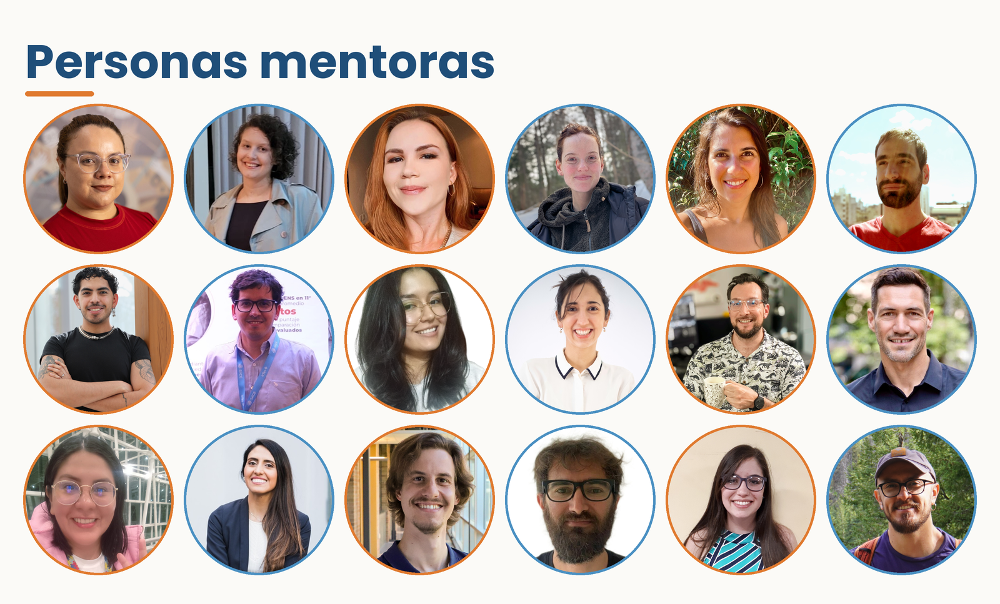
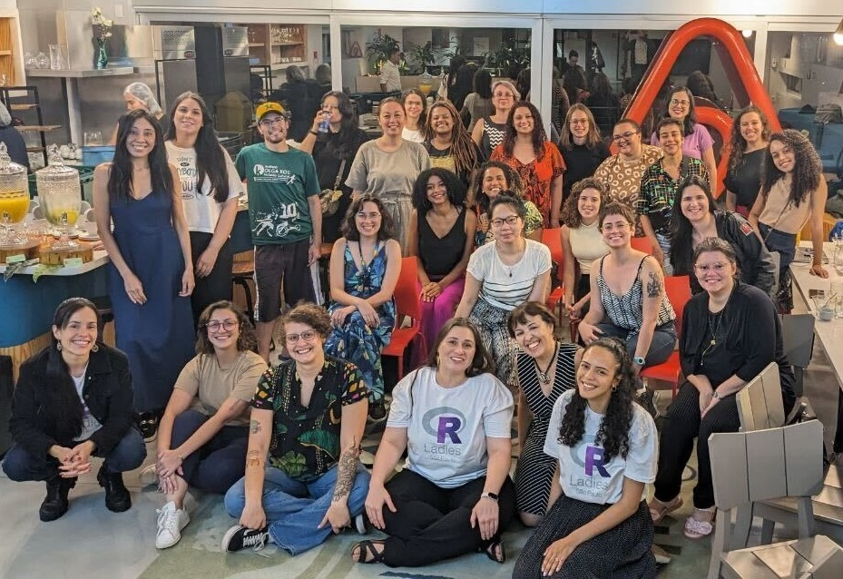
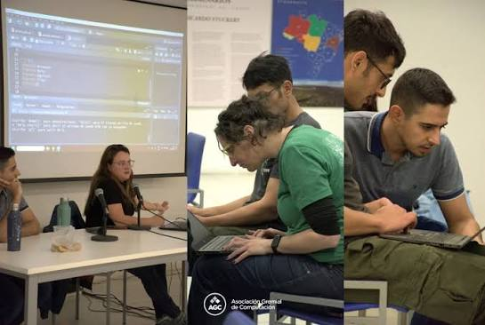
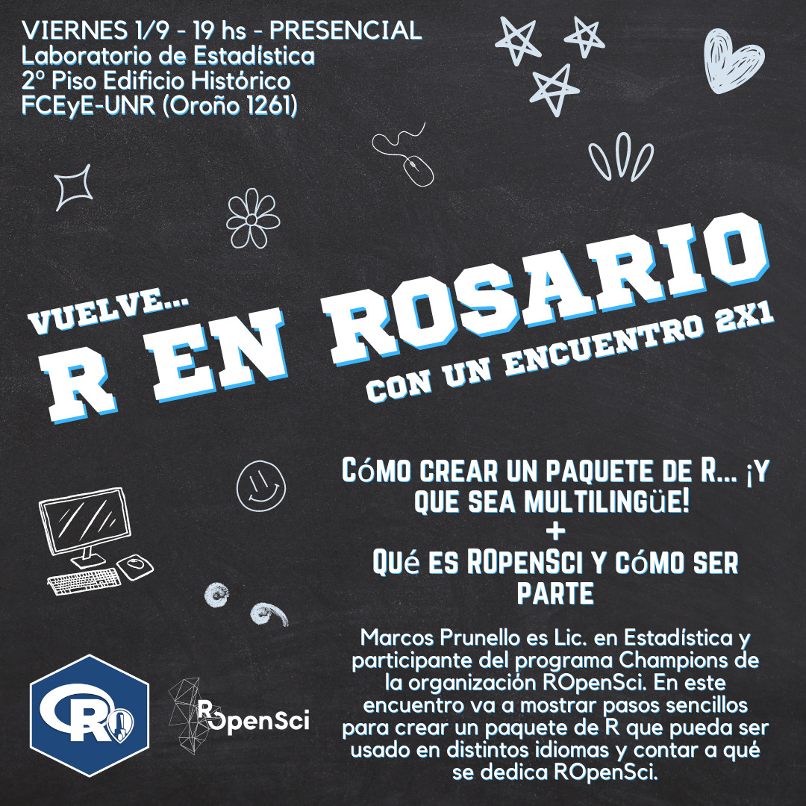
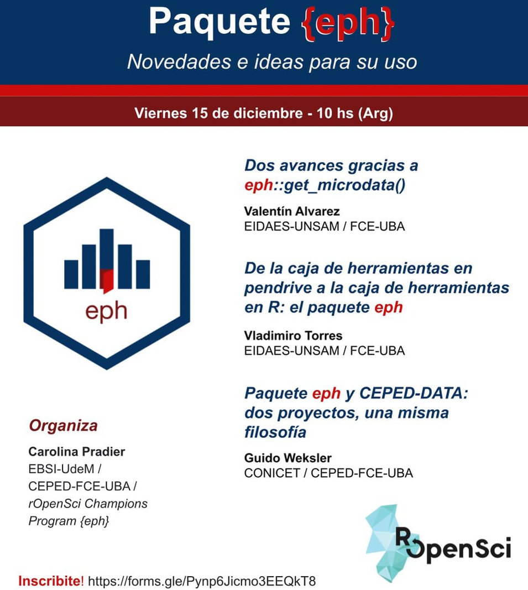

Programa de Campeon(a|e)s de rOpenSci
Un año de acompañamiento para personas que desarrollan código de R
Pensado para grupos históricamente subrepresentados en el software abierto
4 cohortes desde 2022, con un currículo que se revisa en cada edición

Desarrollar un paquete de R es una puerta de entrada a la ciencia abierta.
Pero muchas personas de Latinoamérica y otras regiones, no tienen acceso a trayectorias estructuradas y con apoyo.
Los tutoriales técnicos solos rara vez alcanzan.
También hace falta orientación sobre flujos de trabajo colaborativos, normas comunitarias y la infraestructura social que sostiene los proyectos abiertos.
2022 Primera cohorte, en inglés
2023–2024 Segunda cohorte, en inglés
2025–2026 Cohorte para América Latina, en castellano
2026–2027 Cohorte para América Latina, en castellano
Cada cohorte mejoró el currículo: mentorías asignadas por zona horaria e idioma, el tipo de proyecto, los temas y la duración de los talleres.
Código limpio · pruebas automatizadas · documentación · revisión de software por pares
Trabajo colaborativo · contribución a proyectos abiertos · comunicación · organización de eventos · mentoría
Ambas son igual de esenciales para sostener un paquete en el tiempo.

Mentoría · Desarrollo colaborativo de software · Desarrollo de paquetes de R · Revisión de software · Gestión de comunidad y divulgación
| Eje temático | Versión 1.0 | Versión 4.0 | Sesiones (v4) |
|---|---|---|---|
| Mentoría | Formación para personas tutoras | Formación para personas tutoras | 1 |
| Desarrollo colaborativo | Contribución a R base; software en comunidad | Software en comunidad; Git básico y avanzado | 4 |
| Paquetes de R | Mecánica para principiantes; desarrollo avanzado | Código de calidad y estilo; mecánica (3 encuentros); avanzado; GenIA y paquetes de R | 5 |
| Revisión de software | Revisión por pares en rOpenSci | Revisión por pares; taller práctico | 2 |
| Comunidad y divulgación | Reuniones virtuales activas (PACT) | Contribuir a proyectos abiertos; charlas memorables; organizar eventos | 3 |
v1.0: 7 sesiones de 90 a 180 minutos → v4.0: 15 encuentros de 2 horas

Cada persona campeona trabaja con una persona mentora durante el año
Emparejamiento por zona horaria e idioma
Un encuentro de formación específica para quienes mentorean
Cohortes 2022–2024 · Evaluación del CSCCE con encuestas de salida y entrevistas individuales
100%se sintió bienvenida e incluida
100%tiene más confianza para contribuir al código abierto
100%recomendaría el programa
>80%completó el programa
Entre el 86% y el 100% se sintió más preparada para desarrollar, mejorar y enviar paquetes a revisión por pares.
En las trayectorias
En las comunidades




Currículo completo en castellano, con licencia abierta
Próximamente: un sitio web unificado, repositorios ordenados y una guía para contribuir
¡Sumate al hackathon en LatinR para avanzar con las traducciones!
Te esperamos en HackeaR (Viernes 13 de noviembre de 8 a 10 am, Auditorio 2) para trabajar los materiales y contribuir a otros proyectos de R.
Materiales del currículo https://champions-curriculum.ropensci.org
Yanina Bellini Saibene
yabellini.netlify.app
Mastodon @yabellini@rstats.me
Bluesky @yabellini.bsky.social
GitHub yabellini
LinkedIn yabellini